生成时间：2026-08-11 20:06 ｜ 数据范围：2026-01-01 ~ 2026-08-11
| 品种 | 均价(元/斤) | 平均日波动率 | 异常次数 | 风险评分 |
|---|---|---|---|---|
| 鸡毛菜 | 3.93 | 0.141 | 77 | 216.41 |
| 蒿子秆 | 3.50 | 0.116 | 80 | 206.16 |
| 快菜 | 1.17 | 0.203 | 65 | 191.03 |
| 奶白菜 | 2.96 | 0.117 | 72 | 190.17 |
| 盖菜 | 2.15 | 0.127 | 75 | 188.27 |
| 茼蒿 | 5.18 | 0.117 | 74 | 183.17 |
| 空心菜 | 4.69 | 0.106 | 71 | 177.06 |
| 苋菜 | 4.78 | 0.122 | 70 | 175.22 |
| 荠菜 | 8.34 | 0.365 | 56 | 174.65 |
| 菊花菜 | 2.81 | 0.105 | 63 | 171.05 |
| 菜心 | 2.46 | 0.130 | 59 | 161.3 |
| 黄心菜 | 3.12 | 0.070 | 63 | 159.7 |
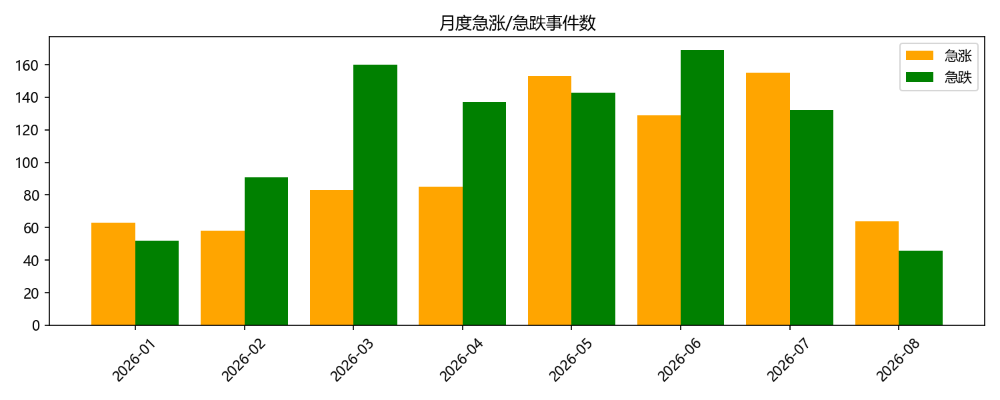
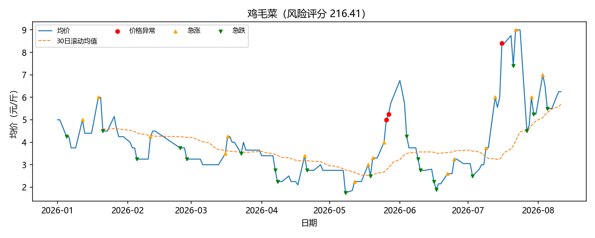
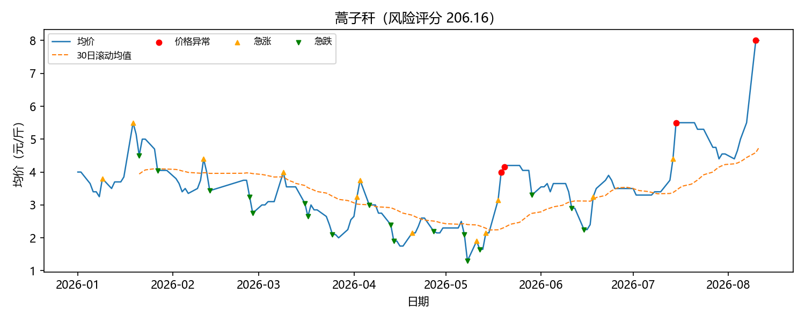
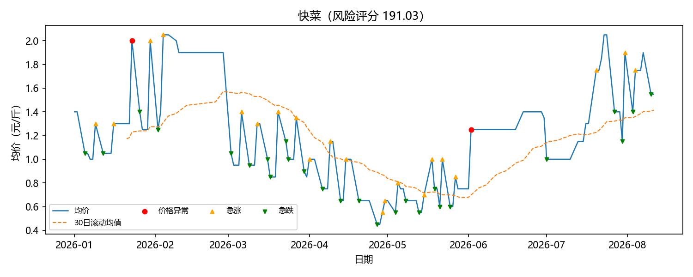
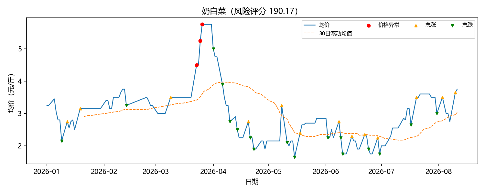
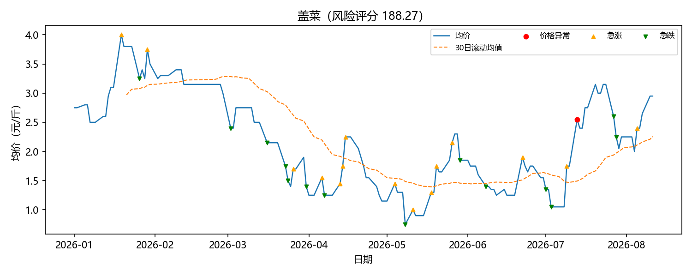
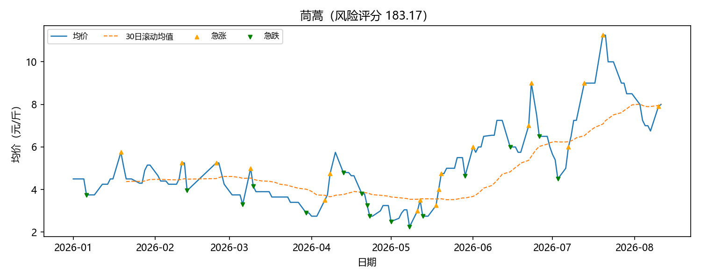
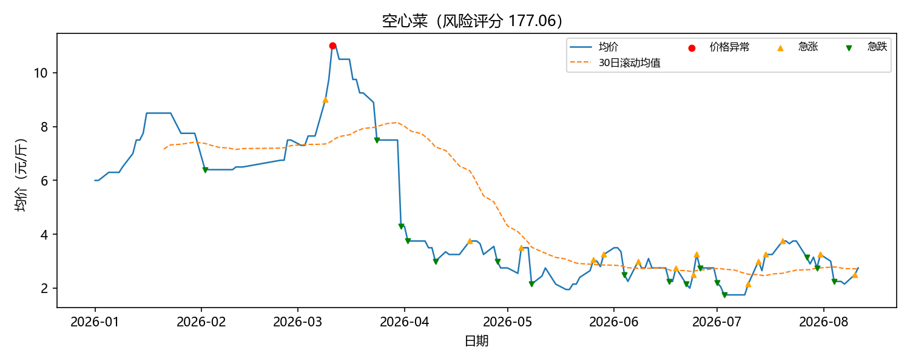
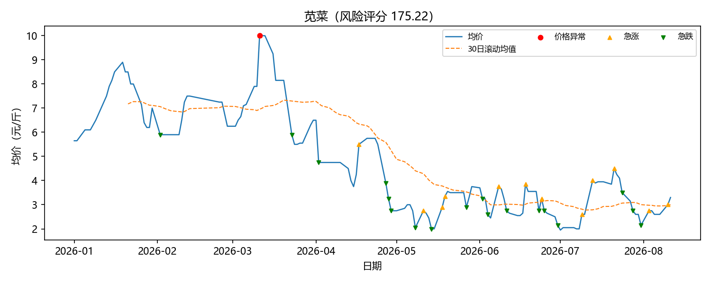
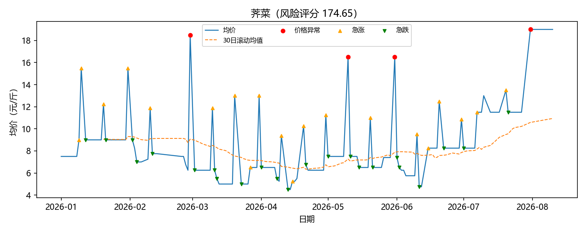
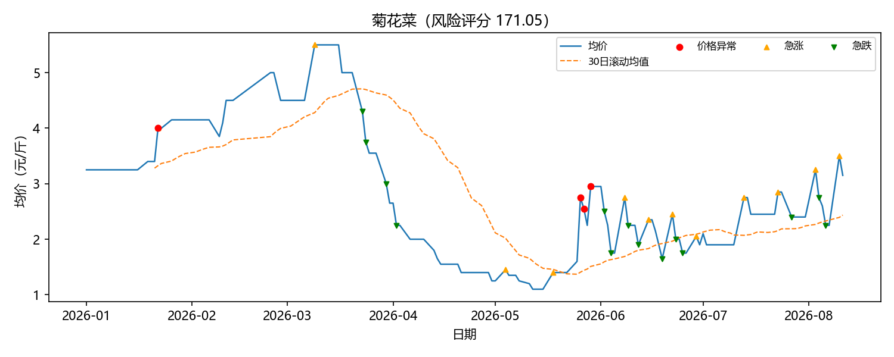
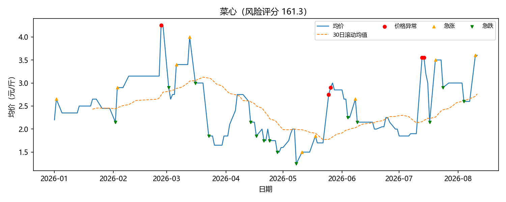
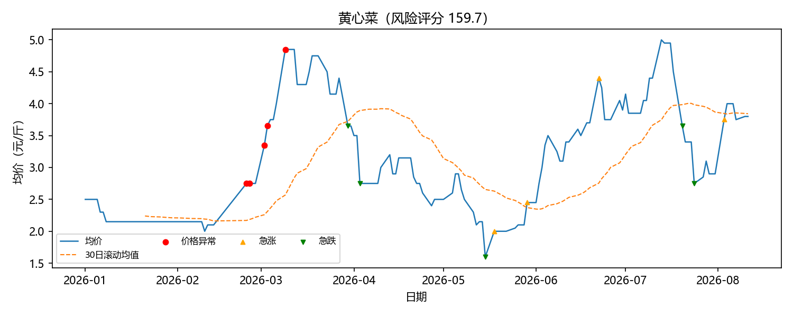